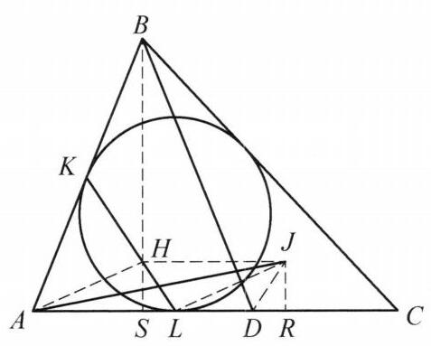

3 例 3：直线 KL 过线段 AJ 的中点
3.1 题目
在 \triangle {ABC} 中， \angle C < \angle A < {90}^{ \circ } ， D 为边 {AC} 上一点，使得 {BD} = {BA} . \triangle {ABC} 的内切圆分别与边 {AB} ， {AC} 切于点 K ， L . 设 J 为 \triangle {BCD} 的内心. 证明:直线 {KL} 过线段 {AJ} 的中点.

图 1-2
3.2 参考解答
如图 1-2,过点 B 作 {BS} \perp {AC} 于点 S,{BS} 与 {KL} 交于点 H . 过 J 作 {JR} \perp {AC} 于点 R ,连接 {DJ},{HJ},{LJ},{AH} ,则由 {BD} = {BA} ,知
{LR} = {AD} + {DR} - {AL}
= {AD} + \frac{{BD} + {CD} - {BC}}{2} - \frac{{AB} + {AC} - {BC}}{2}
= \frac{1}{2}{AD} = {AS} = {SD}.
所以 {AL} = {SR},{SL} = {DR} .
因为
\angle {CDJ} = \frac{1}{2}\angle {CDB} = \frac{1}{2}\left( {\angle {DAB} + \angle {DBA}}\right)
= \frac{1}{2}\left( {\angle {DAB} + {180}^{ \circ } - 2\angle {DAB}}\right) = {90}^{ \circ } - \frac{1}{2}\angle {DAB} = \angle {ALH},
所以 \triangle {LSH} \cong \triangle {DRJ} ,故 {SH} = {JR} ,结合 {HS}//{JR} 知 {HSRJ} 为矩形,故 {HJ} = \; {SR} = {AL} ,于是四边形 {ALJH} 为平行四边形,从而 {HL} 与 {AJ} 互相平分. 原问题得证.
注:通过条件中的角相等及要证的结论中直线 {KL} 过线段 {AJ} 的中点猜测图中有一个矩形结构，再通过内切圆相关边长表达式即可导出结论.
3.3 解题思路与分析
教材和竞赛书在书写几何证明时，通常采用“综合法”（由因导果）的叙事顺序：一上来先把所有辅助线画好（“过 B 作 BS \perp AC 交 KL 于 H”），然后一通计算和全等推导，最后突然变魔术般地得出平行四边形。这种写法在逻辑上最简短，但完全掩盖了“分析法”（执果索因）的探索痕迹。
要看穿这个证明是怎么想出来的，我们可以从逆向倒推（怎么锁定点 H 的位置）和正向破题（条件特征如何自然触发构造）两个维度，完整还原解题者的真实思考过程：
3.4 一、 逆向倒推：点 H 和辅助线 BS 是怎么被“算”出来的？
假设你刚拿到这道题，目标是证明：直线 KL 平分线段 AJ。
3.4.1 1. 转化目标：用“平行四边形”处理“中点”
在平面几何中，要证明一条已知直线（KL）平分一条线段（AJ），最经典的几何模型是什么？ 注意到直线上已经有一个非常特殊且固定的点 L（内切圆切点，且在底边 AC 上）。如果直线 KL 真的经过 AJ 的中点 M，那么把点 L 关于中点 M 作中心对称，就会在直线 KL 上得到一个对应点 H，使得四边形 ALJH 是一个平行四边形！
核心追问：如果四边形 ALJH 真的是平行四边形，那么直线 KL 上的这个点 H 究竟在哪里？它有什么几何特征？
3.4.2 2. 将平行四边形投影到底边 AC 上
一旦假设 ALJH 是平行四边形，它立刻需要满足两个条件： * HJ \parallel AL（即 HJ 平行于底边 AC）； * HJ = AL。
在几何中，处理“平行于底边的线段 HJ”最自然的操作，就是向底边 AC 作垂线（正投影）： * 过点 J 作 JR \perp AC 于点 R； * 过我们假想的点 H 作 HS \perp AC 于点 S。
因为 HJ \parallel AC，所以四边形 HSRJ 必然是一个矩形！既然是矩形，底边上的投影长度就必须满足： SR = HJ = AL 两边同时减去公共部分 SL，立刻得到一个极其关键的定位等式： AS = LR
3.4.3 3. 切线长公式揭晓点 S 的真实身份
现在我们来算一算 LR 到底有多长。 * L 是 \triangle ABC 内切圆在 AC 上的切点； * J 是 \triangle BCD 的内心，而 JR \perp AC，说明 R 恰好就是 \triangle BCD 内切圆在 CD 上的切点！
利用烂熟于心的内切圆切线长公式，把 AL 和 DR 写出来： AL = \frac{AB + AC - BC}{2}, \quad DR = \frac{BD + CD - BC}{2} 题目给出了条件 BD = BA，把两式相减，烦人的 AB, BD, BC 全部抵消了： AL - DR = \frac{AC - CD}{2} = \frac{AD}{2} 而从图上看，线段 LR 的长度正是 AD + DR - AL，代入上式立得： LR = AD - (AL - DR) = AD - \frac{AD}{2} = \frac{1}{2}AD
结合刚才倒推出来的 AS = LR，我们震惊地发现： AS = \frac{1}{2}AD 这说明什么？说明点 H 在底边 AC 上的投影点 S，必然是线段 AD 的中点！ 而已知 \triangle ABD 是等腰三角形（BA = BD），过底边 AD 的中点 S 作 AC 的垂线，这条垂线不就是等腰 \triangle ABD 底边上的高 BS 吗？！
破案了！ 解题者根本不是灵机一动“过 B 作 BS \perp AC 交 KL 于 H”，而是先在草稿纸上假定平行四边形 ALJH 存在，把 H 投影到 AC 上算出了 AS = \frac{1}{2}AD，这才顺藤摸瓜发现点 H 必定落在等腰 \triangle ABD 的高线 BS 上！
3.5 二、 正向破题：题目条件中的“两大巧合”是如何给出暗示的？
即便不先从平行四边形倒推，一个有经验的解题者在正向审题时，也会被题目中两个强烈的信号推着走完全程：
3.5.1 1. 信号一：等腰条件 BD = BA 与两个内切圆的“代数消元”
题目中同时出现了 \triangle ABC 的内切圆切点 L 和 \triangle BCD 的内心 J，且两者的底边都在同一条直线 AC 上。 * 看到内心 J，第一反应就是向底边作垂线 JR \perp AC 找到切点 R。 * 写出两个切线长 AL = \frac{AB+AC-BC}{2} 和 DR = \frac{BD+CD-BC}{2}，看到条件 BD = BA，几乎会本能地将两式联立消元。 * 一旦算出 AL - DR = \frac{1}{2}AD，而等腰 \triangle ABD 的三线合一垂足 S 恰好提供了 \frac{1}{2}AD = AS = SD，把 AS 代进去立刻得到： AL - AS = DR \implies SL = DR 也就是说，在底边 AC 上，天然存在着两条相等的短线段 SL = DR（以及两段相等的长线段 AL = SR）。
3.5.2 2. 信号二：隐藏的等角 90^\circ - \frac{1}{2}\angle A
在底边 AC 上有了相等线段 SL = DR 后，我们自然会去观察从分点 L 和 D 出发的两条斜线——LK 与 DJ 与底边 AC 的夹角： * 在点 L 处：因为 AK, AL 是内切圆切线，所以 AK = AL，等腰 \triangle AKL 的底角为： \angle ALH = 90^\circ - \frac{1}{2}\angle A * 在点 D 处：因为 BA = BD，在等腰 \triangle ABD 中，\angle ADB = 90^\circ - \frac{1}{2}\angle A，从而其邻补角 \angle BDC = 90^\circ + \frac{1}{2}\angle A？不对，注意算式： \angle BDC = \angle A + \angle ABD = \angle A + (180^\circ - 2\angle A) = 180^\circ - \angle A 因为 J 是 \triangle BCD 的内心，DJ 平分 \angle BDC，所以： \angle CDR \text{ 处的 }\angle JDR = \frac{1}{2}\angle BDC = 90^\circ - \frac{1}{2}\angle A
奇迹出现了： 1. 在点 D 右侧，有一个直角三角形 \text{Rt}\triangle DRJ，它的水平直角边是 DR，斜边 DJ 与底边夹角为 90^\circ - \frac{1}{2}\angle A； 2. 在点 L 左侧，有一段长度完全相等的水平线段 SL（SL = DR），且从 L 出发的直线 LH 与底边夹角也是 90^\circ - \frac{1}{2}\angle A！
既然底边相等（SL = DR）、夹角相等（\angle SLH = \angle RDJ），在 R 点有一条垂线 JR \perp AC 构成了 \text{Rt}\triangle DRJ，那么在 S 点依样画葫芦作一条垂线 SH \perp AC 去截 KL 于点 H，构造出全等的 \text{Rt}\triangle LSH \cong \text{Rt}\triangle DRJ，就是极其顺理成章的对称操作了。
3.6 三、 思维路径与教材书写的对比
把整个过程串联起来，就能看清“探索顺序”与“书写顺序”刚好是完全相反的：
| 阶段 | 解题者的真实探索顺序（分析法） | 教材呈现的证明顺序（综合法） |
|---|---|---|
| 第一步 | 要证 KL 平分 AJ \implies 猜想在 KL 上找点 H 使 ALJH 为平行四边形。 | 直接作 BS \perp AC 交 KL 于 H，作 JR \perp AC 于 R。 |
| 第二步 | 将 HJ \parallel AC, HJ = AL 投影到 AC 上 \implies 需要矩形 HSRJ，且 AS = LR。 | 用切线长公式计算 LR = \frac{1}{2}AD = AS = SD，得出 AL = SR, SL = DR。 |
| 第三步 | 用切线长公式算出 LR = \frac{1}{2}AD \implies 发现 S 就是 AD 中点（即 BS \perp AC 的垂足）。 | 导角证明 \angle CDJ = 90^\circ - \frac{1}{2}\angle A = \angle ALH。 |
| 第四步 | 检验 SH 是否等于 JR \implies 通过 \angle ALH = \angle CDJ 发现 \triangle LSH \cong \triangle DRJ，逻辑闭环！ | 证出 \triangle LSH \cong \triangle DRJ \implies HSRJ 为矩形 \implies ALJH 为平行四边形，得证。 |
掌握了“遇到切点算切线长消元”和“遇到平分线段构造平行四边形向底边投影”这两个基本功，这类看似神来之笔的几何构造就会变成有迹可循的常规推演。
3.7 分步证明
3.7.1 步骤 0：已知条件与图形架构
在 △ABC 中，∠C < ∠A < 90°。 点 D 位于边 AC 上且满足 BD = BA。 △ABC 的内切圆分别切边 AB, AC 于点 K, L；点 J 为 △BCD 的内心。 连结直线 KL 与线段 AJ，求证：直线 KL 经过线段 AJ 的中点。
3.7.2 步骤 1：① 作垂线 BS 与 JR，确定 AD 中点 S
过点 B 作 BS ⊥ AC 于点 S，直线 BS 与 KL 交于点 H。 过内心 J 作 JR ⊥ AC 于点 R（R 即为 △BCD 内切圆在边 AC 上的切点）。 在等腰 △BAD 中，因 BA = BD，高 BS 亦为底边中线，故 S 为 AD 的中点，即： AS = SD = ½ AD
3.7.3 步骤 2：② 利用切线长导出 AL = SR 与 SL = DR
由切线长定理，AL = ½(AB + AC - BC)。 在 △BCD 中，切点 R 满足 DR = ½(BD + CD - BC)。 代入 BD = BA 与 CD = AC - AD，相减得： AL - DR = ½ AD = AS = SD 在直线 AC 上计算： LR = AD + DR - AL = AD - (AL - DR) = ½ AD = AS。 由此导出： AL = SR 且 SL = DR
3.7.4 步骤 3：③ 由外角与角平分线性质导出 ∠SLH = ∠RDJ
在等腰 △AKL 中（AK = AL），底角 ∠ALK = 90° - ½∠A。 又在等腰 △BAD 中，外角 ∠CDB = 180° - ∠A。 因 J 是 △BCD 的内心，DJ 平分 ∠CDB，故： ∠CDJ = ½∠CDB = 90° - ½∠A 由点 A, S, L 共线知 ∠SLH = ∠ALK；由点 D, R, C 共线知 ∠RDJ = ∠CDJ。 因此得出关键角相等：∠SLH = ∠RDJ。
3.7.5 步骤 4：④ △LSH ≌ △DRJ 导出对应边 SH = JR
考察直角三角形 △LSH 与 △DRJ： 1. ∠LSH = ∠DRJ = 90°（垂直于边 AC）； 2. 直角边 SL = DR（由步骤 ②）； 3. 锐角 ∠SLH = ∠RDJ（由步骤 ③）。 根据直角三角形全等判定（ASA），得： △LSH ≌ △DRJ 从而对应直角边相等：SH = JR。
3.7.6 步骤 5：⑤ 判定 HSRJ 为矩形，导出 HJ ∥ AL 且 HJ = AL
因为 HS ⊥ AC 且 JR ⊥ AC，所以 HS ∥ JR。 又 SH = JR（步骤 ④），故四边形 HSRJ 为平行四边形； 再结合 ∠HSR = 90°，知 HSRJ 为矩形！ 由矩形性质，对边平行且相等：HJ ∥ SR 且 HJ = SR。 结合步骤 ② 中已证的 SR = AL 及 A, S, R 共线，立即得出： HJ ∥ AL 且 HJ = AL
3.7.7 步骤 6：⑥ 判定 ALJH 为平行四边形，KL 平分 AJ
在四边形 ALJH 中： 因 HJ ∥ AL 且 HJ = AL，一组对边平行且相等，故 ALJH 为平行四边形！ 在平行四边形中，对角线互相平分，因此对角线 HL 与 AJ 互相平分。 设其交点为 M，则 M 为线段 AJ 的中点。 又因点 H, L 均在直线 KL 上，直线 HL 即为直线 KL。 由此证明：直线 KL 经过线段 AJ 的中点 M！